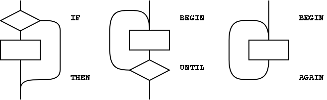
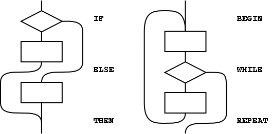
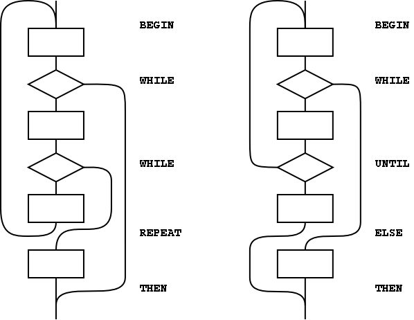

Annex A: Rationale
A.1 Introduction
A.1.1 Purpose
A.1.2 Scope
When judging relative merits of proposed changes to the standard, the
members of the committee were guided by the following goals (listed
in alphabetic order):
| Consistency | The standard provides a functionally complete set of words with
minimal functional overlap.
|
| Cost of compliance | This goal includes such issues as common practice, how much
existing code would be broken by the proposed change, and the
amount of effort required to bring existing applications and
systems into conformity with the standard.
|
| Efficiency | Execution speed, memory compactness.
|
| Portability | Words chosen for inclusion should be free of system-dependent
features.
|
| Readability | Forth definition names should clearly delineate their behavior.
That behavior should have an apparent simplicity which supports
rapid understanding. Forth should be easily taught and support
readily maintained code.
|
| Utility | Be judged to have sufficiently essential functionality and
frequency of use to be deemed suitable for inclusion.
|
A.2 Terms and notation
A.2.1 Definitions of terms
- aligned
-
Data can only be loaded from and stored to addresses that are aligned
according to the alignment requirements of the accessed type. Field
offsets that are added to structure addresses also need to be aligned.
- ambiguous condition
-
The response of a Standard System to an ambiguous condition is left
to the discretion of the implementor. A Standard System need not
explicitly detect or report the occurrence of ambiguous conditions.
- cross compiler
-
Cross compilers may be used to prepare a program for execution in an
embedded system, or may be used to generate Forth kernels either for
the same or a different run-time environment.
- data field
-
In earlier standards, data fields were known as "parameter fields".
On subroutine threaded Forth systems, everything is object code.
There are no traditional code or data fields. Only a word defined by
CREATE or by a word that calls CREATE has a data field.
Only a data field defined via CREATE can be manipulated portably.
- word set
-
This standard recognizes that some functions, while useful in certain
application areas, are not sufficiently general to justify requiring
them in all Forth systems. Further, it is helpful to group Forth
words according to related functions. These issues are dealt with
using the concept of word sets.
The "Core" word set contains the essential body of words in a Forth
system. It is the only "required" word set. Other word sets defined
in this standard are optional additions to make it possible to
provide Standard Systems with tailored levels of functionality.
A.2.2 Notation
A.2.2.2 Stack notation
The use of
-sys,
orig, and
dest data types in
stack effect diagrams conveys two pieces of information. First, it
warns the reader that many implementations use the data stack in
unspecified ways for those purposes, so that items underneath on
either the control-flow or data stacks are unavailable. Second, in
cases where
orig and
dest are used, explicit pairing
rules are documented on the assumption that all systems will
implement that model so that its results are equivalent to employment
of some stack, and that in fact many implementations do use the data
stack for this purpose. However, nothing in this standard requires
that implementations actually employ the data stack (or any other)
for this purpose so long as the implied behavior of the model is
maintained.
A.3 Usage requirements
Forth systems are unusually simple to develop, in comparison with
compilers for more conventional languages such as C. In addition to
Forth systems supported by vendors, public-domain implementations and
implementation guides have been widely available for nearly twenty
years, and a large number of individuals have developed their own
Forth systems. As a result, a variety of implementation approaches
have developed, each optimized for a particular platform or target
market.
The committee has endeavored to accommodate this diversity by
constraining implementors as little as possible, consistent with a
goal of defining a standard interface between an underlying Forth
System and an application program being developed on it.
Similarly, we will not undertake in this section to tell you how to
implement a Forth System, but rather will provide some guidance as
to what the minimum requirements are for systems that can properly
claim compliance with this standard.
A.3.1 Data types
Most computers deal with arbitrary bit patterns. There is no way to
determine by inspection whether a cell contains an address or an
unsigned integer. The only meaning a datum possesses is the meaning
assigned by an application.
When data are operated upon, the meaning of the result depends on
the meaning assigned to the input values. Some combinations of input
values produce meaningless results: for instance, what meaning can
be assigned to the arithmetic sum of the ASCII representation of the
character "A" and a TRUE flag? The answer may be "no meaning";
or alternatively, that operation might be the first step in
producing a checksum. Context is the determiner.
The discipline of circumscribing meaning which a program may assign
to various combinations of bit patterns is sometimes called
data typing. Many computer languages impose explicit data
typing and have compilers that prevent ill-defined operations.
Forth rarely explicitly imposes data-type restrictions. Still, data
types implicitly do exist, and discipline is required, particularly
if portability of programs is a goal. In Forth, it is incumbent upon
the programmer (rather than the compiler) to determine that data are
accurately typed.
This section attempts to offer guidance regarding
de facto
data typing in Forth.
A.3.1.2 Character types
The correct identification and proper manipulation of the character
data type is beyond the purview of Forth's enforcement of data type
by means of stack depth. Characters do not necessarily occupy the
entire width of their single stack entry with meaningful data. While
the distinction between signed and unsigned character is entirely
absent from the formal specification of Forth, the tendency in
practice is to treat characters as short positive integers when
mathematical operations come into play.
- Standard Character Set
- The storage unit for the character data type
(C@, C!, FILL, etc.)
must be able to contain unsigned numbers from 0 through 255.
- An implementation is not required to restrict character
storage to that range, but a Standard Program without
environmental dependencies cannot assume the ability to
store numbers outside that range in a "char" location.
- The allowed number representations are two's-complement,
one's-complement, and signed-magnitude. Note that all of
these number systems agree on the representation of positive
numbers.
- Since a "char" can store small positive numbers
and since the character data type is a sub-range of the
unsigned integer data type, C! must store the n
least-significant bits of a cell (8 <= n <= bits/cell).
Given the enumeration of allowed number representations and
their known encodings, "TRUE
xx C!
xx C@" must leave a stack item with some
number of bits set, which will thus will be accepted as
non-zero by IF.
- For the purposes of input (KEY, ACCEPT, etc.)
and output (EMIT, TYPE, etc.), the encoding
between numbers and human-readable symbols is ISO646/IRV
(ASCII) within the range from 32 to 126 (space to ~).
EBCDIC is out (most "EBCDIC" computer systems support ASCII
too). Outside that range, it is up to the implementation. The
obvious implementation choice is to use ASCII control
characters for the range from 0 to 31, at least for the
"displayable" characters in that range (TAB, RETURN, LINEFEED,
FORMFEED). However, this is not as clear-cut as it may seem,
because of the variation between operating systems on the
treatment of those characters. For example, some systems TAB
to 4 character boundaries, others to 8 character boundaries,
and others to preset tab stops. Some systems perform an automatic
linefeed after a carriage return, others perform an automatic
carriage return after a linefeed, and others do neither.
The codes from 128 to 255 may eventually be standardized,
either formally or informally, for use as international
characters, such as the letters with diacritical marks found
in many European languages. One such encoding is the 8-bit
ISO Latin-1 character set. The computer marketplace at large
will eventually decide which encoding set of those characters
prevails. For Forth implementations running under an
operating system (the majority of those running on standard
platforms these days), most Forth implementors will probably
choose to do whatever the system does, without performing any
remapping within the domain of the Forth system itself.
- A Standard Program can depend on the ability to receive
any character in the range 32 ... 126 through KEY,
and similarly to display the same set of characters with
EMIT. If a program must be able to receive or display
any particular character outside that range, it can declare
an environmental dependency on the ability to receive or
display that character.
- A Standard Program cannot use control characters in
definition names. However, a Standard System is not required
to enforce this prohibition. Thus, existing systems that
currently allow control characters in words names from
BLOCK source may continue to allow them, and
programs running on those systems will continue to work. In
text file source, the parsing action with space as a
delimiter (e.g., BL WORD) treats control
characters the same as spaces. This effectively implies that
you cannot use control characters in definition names from
text-file source, since the text interpreter will treat the
control characters as delimiters. Note that this
"control-character folding" applies only when space is the
delimiter, thus the phrase "CHAR
) WORD"
may collect a string containing control characters.
- Storage and retrieval
Characters are transferred from the data stack to memory by
C! and from memory to the data stack by C@. A
number of lower-significance bits equivalent to the
implementation-dependent width of a character are
transferred from a popped data stack entry to an address by the
action of C! without affecting any bits which may comprise
the higher-significance portion of the cell at the destination
address; however, the action of C@ clears all
higher-significance bits of the data stack entry which it pushes
that are beyond the implementation-dependent width of a character
(which may include implementation-defined display information in
the higher-significance bits). The programmer should keep in mind
that operating upon arbitrary stack entries with words intended
for the character data type may result in truncation of such data.
- Manipulation on the stack
In addition to C@ and C!, characters are moved to,
from and upon the data stack by the following words:
- Additional operations
The following mathematical operators are valid for character data:
The following comparison and bitwise operators may be valid for
characters, keeping in mind that display information cached in
the most significant bits of characters in an implementation-defined
fashion may have to be masked or otherwise dealt with:
A.3.1.3 Single-cell types
A single-cell stack entry viewed without regard to typing is the
fundamental data type of Forth. All other data types are actually
represented by one or more single-cell stack entries.
- Storage and retrieval
Single-cell data are transferred from the stack to memory by
!; from memory to the stack by @. All bits are
transferred in both directions and no type checking of any sort
is performed, nor does the Standard System check that a memory
address used by ! or @ is properly aligned or
properly sized to hold the datum thus transferred.
- Manipulation on the stack
Here is a selection of the most important words which move
single-cell data to, from and upon the data stack:
- Comparison operators
The following comparison operators are universally valid for one
or more single cells:
A.3.1.3.1 Flags
A
FALSE flag is a single-cell datum with all bits unset, and
a
TRUE flag is a single-cell datum with all bits set. While
Forth words which test flags accept any non-null bit pattern as true,
there exists the concept of the
well-formed flag. If an
operation whose result is to be used as a flag may produce any
bit-mask other than
TRUE or
FALSE, the recommended
discipline is to convert the result to a well-formed flag by means
of the Forth word
0<> so that the result of any subsequent
logical operations on the flag will be predictable.
In addition to the words which move, fetch and store single-cell
items, the following words are valid for operations on one or more
flag data residing on the data stack:
A.3.1.3.2 Integers
A single-cell datum may be treated by a Standard Program as a signed
integer. Moving and storing such data is performed as for any
single-cell data. In addition to the universally-applicable operators
for single-cell data specified above, the following mathematical and
comparison operators are valid for single-cell signed integers:
Given the same number of bits, unsigned integers usually represent
twice the number of absolute values representable by signed integers.
A single-cell datum may be treated by a Standard Program as an
unsigned integer. Moving and storing such data is performed as for
any single-cell data. In addition, the following mathematical and
comparison operators are valid for single-cell unsigned integers:
A.3.1.3.3 Addresses
An address is uniquely represented as a single cell unsigned number
and can be treated as such when being moved to, from, or upon the
stack. Conversely, each unsigned number represents a unique address
(which is not necessarily an address of accessible memory). This
one-to-one relationship between addresses and unsigned numbers forces
an equivalence between address arithmetic and the corresponding
operations on unsigned numbers.
Several operators are provided specifically for address arithmetic:
and, if the floating-point word set is present:
A Standard Program may never assume a particular correspondence
between a Forth address and the physical address to which it is
mapped.
A.3.1.3.4 Counted strings
Forth 94 moved toward the consistent use of the "
c-addr u"
representation of strings on the stack. The use of the alternate
"address of counted string" stack representation is discouraged.
The traditional Forth words
WORD and
FIND continue
to use the "address of counted string" representation for historical
reasons. The new word
C", added as a porting aid for existing
programs, also uses the counted string representation.
Counted strings remain useful as a way to store strings in memory.
This use is not discouraged, but when references to such strings
appear on the stack, it is preferable to use the "
c-addr u"
representation.
A.3.1.3.5 Execution tokens
The association between an execution token and a definition is static.
Once made, it does not change with changes in the search order or
anything else. However it may not be unique, e.g., the phrases
might return the same value.
A.3.1.3.6 Error results
The term
ior was originally defined to describe the result of
an input/output operation. This was extended to include other
operations.
A.3.1.4 Cell-pair types
- Storage and retrieval
Two operators are provided to fetch and store cell pairs:
- Manipulation on the stack
Additionally, these operators may be used to move cell pairs
from, to and upon the stack:
- Comparison
The following comparison operations are universally valid for
cell pairs:
A.3.1.4.1 Double-Cell Integers
If a double-cell integer is to be treated as signed, the following
comparison and mathematical operations are valid:
If a double-cell integer is to be treated as unsigned, the following
comparison and mathematical operations are valid:
A.3.1.4.2 Character strings
See:
A.3.1.3.4 Counted strings.
A.3.2 The Implementation environment
A.3.2.1 Numbers
Traditionally, Forth has been implemented on two's-complement machines
where there is a one-to-one mapping of signed numbers to unsigned
numbers — any single cell item can be viewed either as a signed or
unsigned number. Indeed, the signed representation of any positive
number is identical to the equivalent unsigned representation. Further,
addresses are treated as unsigned numbers: there is no distinct pointer
type. Arithmetic ordering on two's complement machines allows
+
and
- to work on both signed and unsigned numbers. This
arithmetic behavior is deeply embedded in common Forth practice.
As a consequence of these behaviors, the likely ranges of signed and
unsigned numbers for implementations hosted on each of the permissible
arithmetic architectures is:
|
| Arithmetic architecture
| signed numbers
| unsigned numbers |
|
| Two's complement | -n-1 | to | n | | 0 | to | 2n+1 |
| One's complement | -n | to | n | | 0 | to | n |
| Signed magnitude | -n | to | n | | 0 | to | n |
|
|
where
n is the largest positive signed number. For all three
architectures, signed numbers in the
0 to
n range are bitwise
identical to the corresponding unsigned number. Note that unsigned
numbers on a signed magnitude machine are equivalent to signed
non-negative numbers as a consequence of the forced correspondence
between addresses and unsigned numbers and of the required behavior
of
+ and
-.
For reference, these number representations may be defined by the
way that
NEGATE is implemented:
where
HIGH-BIT is a bit mask with only the most-significant
bit set. Note that all of these number systems agree on the
representation of non-negative numbers.
Per
3.2.1.1 Internal number representation and
6.1.0270 0=, the implementor must ensure that no standard or
supported word return negative zero for any numeric (non-Boolean or
flag) result. Many existing programmer assumptions will be violated
otherwise.
There is no requirement to implement circular unsigned arithmetic,
nor to set the range of unsigned numbers to the full size of a cell.
There is historical precedent for limiting the range of
u to
that of
+n, which is permissible when the cell size is greater
than 16 bits.
A.3.2.1.2 Digit conversion
For example, an implementation might convert the characters "a"
through "z" identically to the characters "A" through "Z", or
it might treat the characters " [ " through " " as additional
digits with decimal values 36 through 71, respectively.
A.3.2.2 Arithmetic
A.3.2.2.1 Integer division
The Forth-79 Standard specifies that the signed division operators
(
/,
/MOD,
MOD,
*/MOD, and
*/)
round non-integer quotients towards zero (symmetric division).
Forth 83 changed the semantics of these operators to round towards
negative infinity (floored division). Some in the Forth community
have declined to convert systems and applications from the Forth-79
to the Forth-83 divide. To resolve this issue, a Forth-2012 system
is permitted to supply either floored or symmetric operators. In
addition, a standard system must provide a floored division primitive
(
FM/MOD), a symmetric division primitive (
SM/REM), and
a mixed precision multiplication operator (
M*).
This compromise protects the investment made in current Forth
applications; Forth-79 and Forth-83 programs are automatically
compliant with Forth 94 with respect to division. In practice, the
rounding direction rarely matters to applications. However, if a
program requires a specific rounding direction, it can use the
floored division primitive
FM/MOD or the symmetric division
primitive
SM/REM to construct a division operator of the
desired flavor. This simple technique can be used to convert Forth-79
and Forth-83 programs to Forth 94 without any analysis of the
original programs.
A.3.2.2.2 Other integer operations
Whether underflow occurs depends on the data-type of the result. For
example, the phrase
1 2 - underflows if the result is
unsigned and produces the valid signed result -1.
A.3.2.3 Stacks
The only data type in Forth which has concrete rather than abstract
existence is the stack entry. Even this primitive typing Forth only
enforces by the hard reality of stack underflow or overflow. The
programmer must have a clear idea of the number of stack entries to
be consumed by the execution of a word and the number of entries that
will be pushed back to a stack by the execution of a word. The
observation of anomalous occurrences on the data stack is the first
line of defense whereby the programmer may recognize errors in an
application program. It is also worth remembering that multiple stack
errors caused by erroneous application code are frequently of equal
and opposite magnitude, causing complementary (and deceptive) results.
For these reasons and a host of other reasons, the one unambiguous,
uncontroversial, and indispensable programming discipline observed
since the earliest days of Forth is that of providing a stack diagram
for all additions to the application dictionary with the exception of
static constructs such as
VARIABLEs and
CONSTANTs.
A.3.2.3.2 Control-flow stack
The simplest use of control-flow words is to implement the basic
control structures shown in figure
A.1.

Figure A.1: The basic control-flow patterns
In control flow every branch, or transfer of control, must terminate
at some destination. A natural implementation uses a stack to
remember the origin of forward branches and the destination of
backward branches. At a minimum, only the location of each origin or
destination must be indicated, although other implementation-dependent
information also may be maintained.
An origin is the location of the branch itself. A destination is
where control would continue if the branch were taken. A destination
is needed to resolve the branch address for each origin, and conversely,
if every control-flow path is completed no unused destinations can
remain.
With the addition of just three words (
AHEAD,
CS-ROLL and
CS-PICK), the basic control-flow
words supply the primitives necessary to compile a variety of transportable
control structures. The abilities required are compilation of forward
and backward conditional and unconditional branches and compile-time
management of branch origins and destinations.
Table
A.1 shows the desired behavior.
Table A.1: Compilation behavior of control-flow words
|
| at compile-time, |
| word: | supplies: | resolves: | is used to: |
|
| IF | orig | | mark origin of forward conditional branch |
| THEN | | orig | resolve IF or AHEAD |
| BEGIN | dest | | mark backward destination |
| AGAIN | | dest | resolve with backward unconditional branch |
| UNTIL | | dest | resolve with backward conditional branch |
| AHEAD | orig | | mark origin of forward unconditional branch |
| CS-PICK | | | copy item on control-flow stack |
| CS-ROLL | | | reorder items on control-flow stack |
|
|
The requirement that control-flow words are properly balanced by other
control-flow words makes reasonable the description of a compile-time
implementation-defined
control-flow stack. There is no
prescription as to how the control-flow stack is implemented, e.g.,
data stack, linked list, special array. Each element of the
control-flow stack mentioned above is the same size.
With these tools, the remaining basic control-structure elements,
shown in figure
A.2, can be defined. The
stack notation used here for immediate words is (
compilation
/ execution ).

Figure A.2: Additional basic control-flow patterns
Forth control flow provides a solution for well-known problems with
strictly structured programming.
The basic control structures can be supplemented, as shown in the
examples in figure
A.3, with additional
WHILEs in
BEGIN ...
UNTIL and
BEGIN
...
WHILE ...
REPEAT structures. However, for
each additional
WHILE there must be a
THEN at the end
of the structure.
THEN completes the syntax with
WHILE
and indicates where to continue execution when the
WHILE
transfers control. The use of more than one additional
WHILE
is possible but not common. Note that if the user finds this use of
THEN undesirable, an alias with a more likable name could be
defined.
Additional actions may be performed between the control flow word (the
REPEAT or
UNTIL) and the
THEN that matches the
additional
WHILE. Further, if additional actions are desired
for normal termination and early termination, the alternative actions
may be separated by the ordinary Forth
ELSE. The termination
actions are all specified after the body of the loop.

Figure A.3: Extended control-flow patterns
Note that
REPEAT creates an anomaly when matching the
WHILE with
ELSE or
THEN, most notably when
compared with the
BEGIN...
UNTIL case. That is,
there will be one less
ELSE or
THEN than there are
WHILEs because
REPEAT resolves one
THEN. As
above, if the user finds this count mismatch undesirable,
REPEAT
could be replaced in-line by its own definition.
Other loop-exit control-flow words, and even other loops, can be
defined. The only requirements are that the control-flow stack is
properly maintained and manipulated.
The simple implementation of the
CASE structure
below is an example of control structure extension. Note the
maintenance of the data stack to prevent interference with the
possible control-flow stack usage.
A.3.2.3.3 Return stack
The restrictions in section
3.2.3.3 Return stack
are necessary if implementations are to be allowed to place loop
parameters on the return stack.
A.3.2.6 Environmental queries
The size in address units of various data types may be determined by
phrases such as
1 CHARS. Similarly, alignment may be
determined by phrases such as
1 ALIGNED.
The environmental queries are divided into two groups: those that
always produce the same value and those that might not. The former
groups include entries such as
MAX-N. This information is
fixed by the hardware or by the design of the Forth system; a user
is guaranteed that asking the question once is sufficient.
The other, now obsolescent, group of queries are for things that may
legitimately change over time. For example an application might test
for the presence of the Double Number word set using an environment
query. If it is missing, the system could invoke a system-dependent
process to load the word set. The system is permitted to change
ENVIRONMENT?'s database so that subsequent queries about
it indicate that it is present.
Note that a query that returns an "unknown" response could produce
a "known" result on a subsequent query.
A.3.2.7 Obsolescent Environmental Queries
When reviewing the Forth 94 Standard, the question of adapting the
word set queries had to be addressed. Despite the recommendation
in Forth 94, word set queries have not been
supported in a meaningful way by many systems. Consequently, these
queries are not used by many programmers. The committee was unwilling
to exacerbate the problem by introducing additional queries for the
revised word sets. The committee has therefore declared the word set
environment queries (see table
3.5) as obsolescent
with the intention of removing them altogether in the next revision.
They are retained in this standard to support existing Forth 94
programs. New programs should not use them.
A.3.2.8 Extension queries
A.3.3 The Forth dictionary
A Standard Program may redefine a standard word with a non-standard
definition. The program is still standard (since it can be built on
any Standard System), but the effect is to make the combined entity
(Standard System plus Standard Program) a non-standard system.
A.3.3.1 Name space
A.3.3.1.2 Definition names
The language in this section is there to ensure the portability of
Standard Programs. If a program uses something outside the Standard
that it does not provide itself, there is no guarantee that another
implementation will have what the program needs to run. There is no
intent whatsoever to imply that all Forth programs will be somehow
lacking or inferior because they are not standard; some of the finest
jewels of the programmer's art will be non-standard. At the same time,
the committee is trying to ensure that a program labeled "Standard"
will meet certain expectations, particularly with regard to portability.
In many system environments the input source is unable to supply
certain non-graphic characters due to external factors, such as the
use of those characters for flow control or editing. In addition,
when interpreting from a text file, the parsing function specifically
treats non-graphic characters like spaces; thus words received by the
text interpreter will not contain embedded non-graphic characters. To
allow implementations in such environments to call themselves standard,
this minor restriction on Standard Programs is necessary.
A Standard System is allowed to permit the creation of definition
names containing non-graphic characters. Historically, such names
were used for keyboard editing functions and "invisible" words.
A.3.3.2 Code space
A.3.3.3 Data space
The words
>IN,
BASE,
BLK,
SCR,
SOURCE,
SOURCE-ID,
STATE contain information
used by the Forth system in its operation and may be of use to the
application. Any assumption made by the application about data
available in the Forth system it did not store other than the data
just listed is an environmental dependency.
There is no point in specifying (in the Standard) both what is and
what is not addressable. A Standard Program may NOT address:
- Directly into the data or return stacks;
- Into a definition's data field if not stored by the application.
The read-only restrictions arise because some Forth systems run from
ROM and some share I/O buffers with other users or systems. Portable
programs cannot know which areas are affected, hence the general
restrictions.
A.3.3.3.1 Address alignment
Some processors have restrictions on the addresses that can be used
by memory access instructions. For example, some architectures require
16-bit data to be loaded or stored only at even addresses and 32-bit
data only at addresses that are multiples of four.
An implementor can handle these alignment restrictions in one of two
ways. Forth's memory access words (
@,
!,
+!,
etc.) could be implemented in terms of smaller-width access instructions,
which have no alignment restrictions. For example, on a system with
16-bit cells,
@ could be implemented with two byte-fetch
instructions and a reassembly of the bytes into a 16-bit cell. Although
this conceals hardware restrictions from the programmer, it is inefficient,
and may have unintended side effects in some hardware environments.
An alternate implementation could define each memory-access word
using the native instructions that most closely match the word's function.
The 16-bit cell system could implement
@ using the processor's
16-bit fetch instruction, in this case, the responsibility for giving
@ a correctly-aligned address falls on the programmer. A
portable program must assume that alignment may be required and
follow the requirements of this section.
A.3.3.3.2 Contiguous regions
The data space of a Forth system comes in discontiguous regions. The
location of some regions is provided by the system, some by the
program. Data space is contiguous within regions, allowing address
arithmetic to generate valid addresses only within a single region.
A Standard Program cannot make any assumptions about the relative
placement of multiple regions in memory.
Section
3.3.3.2 does prescribe conditions under which
contiguous regions of data space may be obtained. For example:
makes a table whose address is returned by
TABLE. In
accessing this table,
Similarly,
makes an array 1000 address units in size. A more portable strategy
would define the array in application units, such as:
This array can be indexed like this:
A.3.3.3.6 Other transient regions
In many existing Forth systems, these areas are at
HERE or
just beyond it, hence the many restrictions.
(2*n)+2 is the size of a character string containing the
unpunctuated binary representation of the maximum double number with
a leading minus sign and a trailing space.
Implementation note: Since the minimum value of
n is 16, the
absolute minimum size of the pictured numeric output string is 34
characters. But if your implementation has a larger
n, you must
also increase the size of the pictured numeric output string.
A.3.4 The Forth text interpreter
A.3.4.3 Semantics
The "initiation semantics" correspond to the code that is executed
upon entering a definition, analogous to the code executed by
EXIT upon leaving a definition. The "run-time semantics"
correspond to code fragments, such as literals or branches, that are
compiled inside colon definitions by words with explicit compilation
semantics.
In a Forth cross compiler, the execution semantics may be specified
to occur in the host system only, the target system only, or in both
systems. For example, it may be appropriate for words such as
CELLS to execute on the host system returning a value describing
the target, for colon definitions to execute only on the target, and
for
CONSTANT and
VARIABLE to have execution behaviors on
both systems. Details of cross compiler behavior are beyond the scope
of this standard.
A.3.4.3.2 Interpretation semantics
For a variety of reasons, this standard does not define interpretation
semantics for every word. Examples of these words are
>R,
.",
DO, and
IF. Nothing in this Standard precludes
an implementation from providing interpretation semantics for these
words, such as interactive control-flow words. However, a Standard
Program may not use them in interpretation state.
A.3.4.5 Compilation
Compiler recursion at the definition level consumes excessive
resources, especially to support locals. The committee does not
believe that the benefits justify the costs. Nesting definitions
is also not common practice and won't work on many systems.
A.4 Documentation requirements
A.4.1 System documentation
A.4.2 Program documentation
A.5 Compliance and labeling
A.5.1 Forth-2012 systms
Section
5.1 defines the criteria that a system must
meet in order to justify the label "Forth-2012 System". Briefly,
the minimum requirement is that the system must "implement" the
Core word set. There are several ways in which this requirement may
be met. The most obvious is that all Core words may be in a pre-compiled
kernel. This is not the only way of satisfying the requirement,
however. For example, some words may be provided in source blocks or
files with instructions explaining how to add them to the system if
they are needed. So long as the words are provided in such a way that
the user can obtain access to them with a clear and straightforward
procedure, they may be considered to be present.
A Forth cross compiler has many characteristics in common with a standard
system, in that both use similar compiling tools to process a program.
However, in order to fully specify a Forth-2012 standard
cross compiler it would be necessary to address complex issues dealing with
compilation
and execution semantics in both host and target environments as well as
ROMability issues. The level of effort to do this properly has proved to
be impractical at this time. As a result, although it may be possible
for a Forth cross compiler to correctly prepare a Forth-2012
standard program for execution in a target environment, it is inappropriate
for a cross compiler to be labeled a Forth-2012 standard system.
A.5.2 Forth-2012 programs
A.5.2.2 Program labeling
Declaring an environmental dependency should not be considered
undesirable, merely an acknowledgment that the author has taken
advantage of some assumed architecture. For example, most computers
in common use are based on two's complement binary arithmetic. By
acknowledging an environmental dependency on this architecture,
a programmer becomes entitled to use the number
-1 to
represent all bits set without significantly restricting the
portability of the program.
Because all programs require space for data and instructions, and
time to execute those instructions, they depend on the presence of
an environment providing those resources. It is impossible to predict
how little of some of these resources (e.g. stack space) might be
necessary to perform some task, so this standard does not do so.
On the other hand, as a program requires increasing levels of
resources, there will probably be sucessively fewer systems on
which it will execute sucessfully. An algorithm requiring an array
of
109 cells might run on fewer computers than one requiring
only
103.
Since there is also no way of knowing what minimum level of resources
will be implemented in a system useful for at least some tasks, any
program performing real work labeled simply
a "Standard Forth-2012 Program" is unlikely to be labeled
correctly.
A.6 Glossary
In this and following sections we present rationales for the handling
of specific words: why we included them, why we placed them in certain
word sets, or why we specified their names or meaning as we did.
Words in this section are organized by word set, retaining their index
numbers for easy cross-referencing to the glossary.
Historically, many Forth systems have been written in Forth. Many of
the words in Forth originally had as their primary purpose support of
the Forth system itself. For example,
WORD and
FIND are
often used as the principle instruments of the Forth text interpreter,
and
CREATE in many systems is the primitive for building
dictionary entries. In defining words such as these in a standard way,
we have endeavored not to do so in such a way as to preclude their use
by implementors. One of the features of Forth that has endeared it to
its users is that the same tools that are used to implement the system
are available to the application programmer — a result of this
approach is the compactness and efficiency that characterizes most
Forth implementations.
Typical use: ...
' name.
Many Forth systems use a state-smart tick. Many do not.
Forth-2012 follows the usage of Forth 94.
Typical use: ... ( ccc) ...
Typical use:
: X ... limit first
DO
... step
+LOOP
;
The use of
, (comma) for compiling execution tokens is
not portable.
See:
6.2.0945 COMPILE,.
Typical use:
: X ...
." ccc" ...
;
An implementation may define interpretation semantics for
." if desired. In one plausible implementation,
interpreting
." would display the delimited message.
In another plausible implementation, interpreting
."
would compile code to display the message later. In still
another plausible implementation, interpreting
." would
be treated as an exception. Given this variation a Standard
Program may not use
." while interpreting. Similarly,
a Standard Program may not compile
POSTPONE ."
inside a new word, and then use that word while interpreting.
Typical use:
: name ...
;
In Forth 83, this word was specified to alter the search order.
This specification is explicitly removed in this standard. We
believe that in most cases this has no effect; however, systems
that allow many search orders found the Forth-83 behavior of
colon very undesirable.
Note that colon does not itself invoke the compiler. Colon sets
compilation state so that later words in the parse area are
compiled.
Typical use:
: name ...
;
One function performed by both
; and
;CODE
is to allow the current definition to be found in the
dictionary. If the current definition was created by
:NONAME the current definition has no definition name
and thus cannot be found in the dictionary. If
:NONAME
is implemented the Forth compiler must maintain enough
information about the current definition to allow
; and
;CODE to determine whether or not any action must
be taken to allow it to be found.
a-addr is the address that
HERE would have
returned had it been executed immediately after the execution
of the
CREATE that defined
xt.
Typical use:
: X ...
test ABORT" ccc"
...
;
Specification of a non-zero, positive integer count (
+n1)
for
ACCEPT allows some implementors to continue their
practice of using a zero or negative value as a flag to trigger
special behavior. Insofar as such behavior is outside the
standard, Standard Programs cannot depend upon it, but the
committee doesn't wish to preclude it unnecessarily.
Because actual values are almost always small integers, no
functionality is impaired by this restriction.
It is recommended that all non-graphic characters be reserved
for editing or control functions and not be stored in the input
string.
Because external system hardware and software may perform the
ACCEPT function, when a line terminator is received the
action of the cursor, and therefore the display, is
implementation-defined. It is recommended that the cursor remain
immediately following the entered text after a line terminator
is received.
In this standard we have attempted to provide transportability
across various CPU architectures. One of the frequent causes
of transportability problems is the requirement of cell-aligned
addresses on some CPUs. On these systems,
ALIGN and
ALIGNED may be required to build and traverse data
structures built with
C,. Implementors may define these
words as no-ops on systems for which they aren't functional.
Because space is used throughout Forth as the standard
delimiter, this word is the only way a program has to find and
use the system value of "space". The value of a space
character can not be obtained with
CHAR, for instance.
As with
ALIGN and
ALIGNED, the words
CELLS
and
CELL+ were added to aid in transportability across
systems with different cell sizes. They are intended to be used
in manipulating indexes and addresses in integral numbers of
cell-widths. Example:
Example:
Allots space in the array
NUMBERS for 100 cells
of data.
Typical use: ...
CHAR A CONSTANT "A" ...
Typical use: ...
DECIMAL 10 CONSTANT TEN
...
The data-field address of a word defined by
CREATE is
given by the data-space pointer immediately following the
execution of
CREATE.
Reservation of data field space is typically done with
ALLOT.
Typical use: ...
CREATE SOMETHING ...
Typical use:
: X ...
limit first DO
...
LOOP
;
or
: X ...
limit first DO
...
step +LOOP
;
Typical use:
: X ...
DOES> ...
;
Following
DOES>, a Standard Program may not make any
assumptions regarding the ability to find either the name of
the definition containing the
DOES> or any previous
definition whose name may be concealed by it.
DOES>
effectively ends one definition and begins another as far as
local variables and control-flow structures are concerned.
The compilation behavior makes it clear that the user is not
entitled to place
DOES> inside any control-flow
structures.
Typical use:
: X ...
test IF ...
ELSE ...
THEN
;
In a Standard System that contains only the Core word set,
effective use of
ENVIRONMENT? requires either its use
within a definition, or the use of user-supplied auxiliary
definitions. The Core word set lacks both a direct method for
collecting a string in interpretation state (
11.6.1.2165 S"
is in an optional word set) and also a means to test the
returned flag in interpretation state (e.g. the optional
15.6.2.2532 [IF]).
Typical use:
: X ...
test IF
...
EXIT THEN
...
;
One of the more difficult issues which the committee took on
was the problem of divorcing the specification of
implementation mechanisms from the specification of the
Forth language. Three basic implementation approaches can be
quickly enumerated:
- Threaded code mechanisms.
These are the traditional approaches to implementing Forth,
but other techniques may be used.
- Subroutine threading with "macro-expansion" (code
copying). Short routines, like the code for DUP,
are copied into a definition rather than compiling a
JSR reference.
- Native coding with optimization.
This may include stack optimization (replacing such phrases
as SWAP ROT + with one or two machine
instructions, for example), parallelization (the trend in
the newer RISC chips is to have several functional subunits
which can execute in parallel), and so on.
The initial requirement (inherited from Forth 83) that
compilation addresses be compiled into the dictionary
disallowed type 2 and type 3 implementations.
Type 3 mechanisms and optimizations of type 2 implementations
were hampered by the explicit specification of immediacy or
non-immediacy of all standard words.
POSTPONE allowed
de-specification of immediacy or non-immediacy for all but a
few Forth words whose behavior must be
STATE-independent.
One type 3 implementation, Charles Moore's cmForth, has both
compiling and interpreting versions of many Forth words. At the
present, this appears to be a common approach for type 3
implementations. The committee felt that this implementation
approach must be allowed. Consequently, it is possible that
words without interpretation semantics can be found only during
compilation, and other words may exist in two versions: a
compiling version and an interpreting version. Hence the values
returned by
FIND may depend on
STATE, and
'
and
['] may be unable to find words without
interpretation semantics.
By introducing the requirement for "floored" division,
Forth 83 produced much controversy and concern on the part of
those who preferred the more common practice followed in other
languages of implementing division according to the behavior
of the host CPU, which is most often symmetric (rounded toward
zero). In attempting to find a compromise position, this
standard provides primitives for both common varieties, floored
and symmetric (see
SM/REM).
FM/MOD is the floored
version.
The committee considered providing two complete sets
of explicitly named division operators, and declined to do so
on the grounds that this would unduly enlarge and complicate
the standard. Instead, implementors may define the normal
division words in terms of either
FM/MOD or
SM/REM providing they document their choice. People
wishing to have explicitly named sets of operators are
encouraged to do so.
FM/MOD may be used, for example,
to define:
Typical use:
: X ...
test IF ...
THEN
...
;
or
: X ...
test IF
...
ELSE ...
THEN
...
;
Typical use:
: X
...
; IMMEDIATE
The word
NOT was originally provided in Forth as a
flag operator to make control structures readable. Under its
intended usage the following two definitions would produce
identical results:
This was common usage prior to the Forth-83 Standard which
redefined
NOT as a cell-wide one's-complement
operation, functionally equivalent to the phrase
-1
XOR. At the same time, the data type manipulated by
this word was changed from a flag to a cell-wide collection of
bits and the standard value for true was changed from "1"
(rightmost bit only set) to "-1" (all bits set). As these
definitions of
TRUE and
NOT were incompatible
with their previous definitions, many Forth users continue to
rely on the old definitions. Hence both versions are in common
use.
Therefore, usage of
NOT cannot be standardized at
this time. The two traditional meanings of
NOT —
that of negating the sense of a flag and that of doing a one's
complement operation — are made available by
0= and
INVERT, respectively.
Use of
KEY indicates that the application is processing
primitive characters. Some input devices, e.g., keyboards,
may provide more information than can be represented as a
primitive character and such an event may be received as an
implementation-specific sequence of primitive characters.
See
A.10.6.2.1305 EKEY.
Note that
LEAVE immediately exits the loop. No words
following
LEAVE within the loop will be executed.
Typical use:
: X ...
DO
...
IF
...
LEAVE
THEN ...
LOOP ...
;
Typical use:
: X ...
[ x ] LITERAL
...
;
Typical use:
: X ...
limit first DO
...
LOOP
...
;
or
: X ...
limit first ?DO
...
LOOP
...
;
This word is a useful early step in calculation, going to
extra precision conveniently. It has been in use since the
Forth systems of the early 1970's.
CMOVE and
CMOVE> are the primary
move operators in Forth 83. They specify a behavior for moving
that implies propagation if the move is suitably invoked. In
some hardware, this specific behavior cannot be achieved using
the best move instruction. Further,
CMOVE and
CMOVE> move characters; Forth needs a move
instruction capable of dealing with address units. Thus
MOVE has been defined and added to the Core word set,
and
CMOVE and
CMOVE> have been
moved to the String word set.
Typical use:
: ENDIF
POSTPONE THEN
; IMMEDIATE
: X ...
IF ...
ENDIF
...
;
POSTPONE replaces most of the functionality of
COMPILE and
[COMPILE].
COMPILE and
[COMPILE] are used for the same purpose: postpone the
compilation behavior of the next word in the parse area.
COMPILE was designed to be applied to non-immediate
words and
[COMPILE] to immediate words. This burdens
the programmer with needing to know which words in a system
are immediate. Consequently, Forth standards have had to
specify the immediacy or non-immediacy of all words covered by
the standard. This unnecessarily constrains implementors.
A second problem with
COMPILE is that some
programmers have come to expect and exploit a particular
implementation, namely:
: COMPILE R>
DUP @ , CELL+ >R
;
This implementation will not work on native code Forth systems.
In a native code Forth using inline code expansion and peephole
optimization, the size of the object code produced varies; this
information is difficult to communicate to a "dumb"
COMPILE. A "smart" (i.e., immediate)
COMPILE
would not have this problem, but this was forbidden in previous
standards.
For these reasons,
COMPILE has not been included in
the standard and
[COMPILE] has been moved in favor of
POSTPONE. Additional discussion can be found in Hayes,
J.R., "Postpone",
Proceedings of the 1989 Rochester
Forth Conference.
Typical use:
: X ...
RECURSE ...
;
This is Forth's recursion operator; in some implementations it
is called
MYSELF. The usual example is the coding of
the factorial function.
n2 = n1(n1-1)(n1-2)...(2)(1), the product of
n1
with all positive integers less than itself (as a special case,
zero factorial equals one). While beloved of computer scientists,
recursion makes unusually heavy use of both stacks and should
therefore be used with caution. See alternate definition in
A.6.1.2140 REPEAT.
Typical use:
: X ...
S" ccc"
...
;
See the previous discussion of division under
FM/MOD.
SM/REM is the symmetric-division primitive, which allows
programs to define the following symmetric-division operators:
SOURCE simplifies the process of directly accessing the
input buffer by hiding the differences between its location
for different input sources. This also gives implementors more
flexibility in their implementation of buffering mechanisms
for different input sources. The committee moved away from an
input buffer specification consisting of a collection of
individual variables.
Although
EVALUATE,
LOAD,
INCLUDE-FILE and
INCLUDED
are not listed as words which alter
STATE, the text
interpreted by any one of these words could include one or
more words which explicitly alter
STATE.
EVALUATE,
LOAD,
INCLUDE-FILE and
INCLUDED
do not in themselves alter
STATE.
STATE does not nest with text interpreter nesting. For
example, the code sequence:
: FOO
S" ]" EVALUATE
;
FOO
will leave the system in compilation state. Similarly, after
LOADing a block containing
], the system
will be in compilation state.
Note that
] does not affect the parse area and that the
only effect that
: has on the parse area is to parse a
word. This entitles a program to use these words to set the
state with known side-effects on the parse area. For example:
: NOP
: POSTPONE ; IMMEDIATE
;
NOP ALIGN
NOP ALIGNED
Some non-compliant systems have
] invoke a
compiler loop in addition to setting
STATE. Such a
system would inappropriately attempt to compile the second
use of
NOP.
Typical use:
: X ...
test IF ...
THEN
...
;
or
: X ...
test IF ...
ELSE ...
THEN
...
;
Typical use:
UNLOOP allows the use of
EXIT within the context
of
DO ...
LOOP and related do-loop constructs.
UNLOOP as a function has been called
UNDO.
UNLOOP is more indicative of the action: nothing gets
undone — we simply stop doing it.
Typical use:
: X ...
BEGIN ...
test UNTIL
...
;
Typical use:
VARIABLE XYZ
Typical use: char WORD ccc<char>
Typical use:
: X ...
[CHAR] c
...
;
A.7.2 Core extension words
The words in this collection fall into several categories:
- Words that are in common use but are deemed less essential than
Core words (e.g., 0<>);
- Words that are in common use but can be trivially defined from
Core words (e.g., FALSE);
- Words that are primarily useful in narrowly defined types of
applications or are in less frequent use (e.g., PARSE);
- Words that are being deprecated in favor of new words introduced
to solve specific problems.
Because of the varied justifications for inclusion of these words,
the committee does not encourage implementors to offer the complete
collection, but to select those words deemed most valuable to their
clientele.
In .R, "R" is short for RIGHT.
The primary advantage of 2>R is that it puts the top
stack entry on the top of the return stack. For instance, a
double-cell number may be transferred to the return stack and
still have the most significant cell accessible on the top of
the return stack.
Note that
2R> is not equivalent to
R> R>.
Instead, it mirrors the action of
2>R
(see
A.6.2.0340).
Typical use:
DEFER print
:NONAME ( n -- )
. ; IS print
Typical use:
: X ...
?DO ...
LOOP ...
;
Typical use:
: X
...
BEGIN ...
AGAIN
...
;
Unless word-sequence has a way to terminate, this is an
endless loop.
BUFFER: provides a means of defining an uninitialized buffer.
In systems that use a single memory space, this can effectively
be defined as:
However, many systems profit from a separation of uninitialized and
initialized data areas. Such systems can implement
BUFFER: so
that it allocates memory from a separate uninitialized memory area.
Embedded systems can take advantage of the lack of initialization of the
memory area while hosted systems are permitted to
ALLOCATE
a buffer.
A system may select a region of memory for performance reasons.
A detailed knowledge of the memory allocation within the system
is required to provide a version of
BUFFER: that can take
advantage of the system.
It should be noted that the memory buffer provided by
BUFFER:
is not initialized by the system and that if the application requires
it to be initialized, it is the responsibility of the application to
initialize it.
COMPILE, is the compilation equivalent of
EXECUTE.
In traditional threaded-code implementations, compilation is
performed by
, (comma). This usage is not portable; it
doesn't work for subroutine-threaded, native code, or
relocatable implementations. Use of
COMPILE, is portable.
In most systems it is possible to implement
COMPILE, so
it will generate code that is optimized to the same extent as
code that is generated by the normal compilation process.
However, in some implementations there are two different
"tokens" corresponding to a particular definition name:
the normal "execution token" that is used while interpreting
or with
EXECUTE, and another "compilation token" that
is used while compiling. It is not always possible to obtain
the compilation token from the execution token. In these
implementations,
COMPILE, might not generate code that
is as efficient as normally compiled code.
The intention is that
COMPILE, can be used as follows to write
the classic interpreter/compiler loop:
Thus the interpretation semantics are left undefined, as
COMPILE,
will not be executed during interpretation.
As dictionary implementations have become more elaborate
and in some cases have used multiple address spaces,
FORGET has become prohibitively difficult or
impossible to implement on many Forth systems.
MARKER
greatly eases the problem by making it possible for the
system to remember "landmark information" in advance that
specifically marks the spots where the dictionary may at some
future time have to be rearranged.
PAD has been available as scratch storage for strings
since the earliest Forth implementations. It was brought to
our attention that many programmers are reluctant to use
PAD, fearing incompatibilities with system uses.
PAD is specifically intended as a programmer convenience,
however, which is why we documented the fact that no standard
words use it.
Typical use:
char PARSE ccc<
char>
The traditional Forth word for parsing is
WORD.
PARSE solves the following problems with
WORD:
- WORD always skips leading delimiters. This
behavior is appropriate for use by the text interpreter,
which looks for sequences of non-blank characters, but is
inappropriate for use by words like ( , .(,
and .". Consider the following (flawed) definition
of .(:
: .(
[CHAR]
)
WORD COUNT TYPE
; IMMEDIATE
This works fine when used in a line like:
.( HELLO) 5 .
but consider what happens if the user enters an empty
string:
.( ) 5 .
The definition of .( shown above would treat the
) as a leading delimiter, skip it, and continue
consuming characters until it located another )
that followed a non-) character, or until the
parse area was empty. In the example shown, the
5 .
would be treated as part of the string to be printed.
With PARSE, we could write a correct definition of
.(:
: .(
[CHAR] )
PARSE TYPE
; IMMEDIATE
This definition avoids the "empty string" anomaly.
- WORD returns its result as a counted string.
This has four bad effects:
- The characters accepted by WORD must be
copied from the input buffer into a transient buffer,
in order to make room for the count character that
must be at the beginning of the counted string. The
copy step is inefficient, compared to PARSE,
which leaves the string in the input buffer and doesn't
need to copy it anywhere.
- WORD must be careful not to store too many
characters into the transient buffer, thus overwriting
something beyond the end of the buffer. This adds to
the overhead of the copy step. (WORD may have
to scan a lot of characters before finding the trailing
delimiter.)
- The count character limits the length of the string
returned by WORD to 255 characters (longer
strings can easily be stored in blocks!). This
limitation does not exist for PARSE.
- The transient buffer is typically overwritten by the
next use of WORD.
The need for WORD has largely been eliminated by
PARSE and PARSE-NAME. WORD is
retained for backward compatibility.
0 PICK is equivalent to
DUP and
1 PICK is equivalent to
OVER.
REFILL is designed to behave reasonably for all possible
input sources. If the input source is coming from the user,
REFILL could still return a false value if, for instance,
a communication channel closes so that the system knows that no
more input will be available.
2 ROLL is equivalent to
ROT,
1 ROLL is equivalent to
SWAP and
0 ROLL is a null operation.
SAVE-INPUT and
RESTORE-INPUT allow the same
degree of input source repositioning within a text file as is
available with
BLOCK input.
SAVE-INPUT
and
RESTORE-INPUT "hide the details" of the operations
necessary to accomplish this repositioning, and are used the
same way with all input sources. This makes it easier for
programs to reposition the input source, because they do not
have to inspect several variables and take different action
depending on the values of those variables.
SAVE-INPUT and
RESTORE-INPUT are intended for
repositioning within a single input source; for example, the
following scenario is NOT allowed for a Standard Program:
This is incorrect because, at the time
RESTORE-INPUT is
executed, the input source is the string via
EVALUATE,
which is not the same input source that was in effect when
SAVE-INPUT was executed.
The following code is allowed:
After
EVALUATE returns, the input source specification
is restored to its previous state, thus
SAVE-
INPUT
and
RESTORE-INPUT are called with the same input source
in effect.
In the above examples, the
EVALUATE phrase could have
been replaced by a phrase involving
INCLUDE-FILE
and the same rules would apply.
The standard does not specify what happens if a program
violates the above rules. A Standard System might check for
the violation and return an exception indication from
RESTORE-INPUT, or it might fail in an unpredictable
way.
The return value from
RESTORE-INPUT is primarily
intended to report the case where the program attempts to
restore the position of an input source whose position cannot
be restored. The keyboard might be such an input source.
Nesting of
SAVE-INPUT and
RESTORE-INPUT is
allowed. For example, the following situation works as
expected:
In principle,
RESTORE-INPUT could be implemented to
"always fail", e.g.:
Such an implementation would not be useful in most cases. It
would be preferable for a system to leave
SAVE-INPUT
and
RESTORE-INPUT undefined, rather than to create a
useless implementation. In the absence of the words, the
application programmer could choose whether or not to create
"dummy" implementations or to work-around the problem in
some other way.
Examples of how an implementation might use the return values
from
SAVE-INPUT to accomplish the save/restore function:
These are examples only; a Standard Program may not assume any
particular meaning for the individual stack items returned by
SAVE-INPUT.
Typical use:
x TO name
Some implementations of
TO do not parse; instead they set
a mode flag that is tested by the subsequent execution of
name. Standard programs must use
TO as if it
parses. Therefore
TO and
name must be
contiguous and on the same line in the source text.
TRUE is equivalent to the phrase
0 0=.
Typical use:
0
VALUE data
: EXCHANGE
( n1 -- n2 )
data
SWAP TO data
;
EXCHANGE leaves
n1 in
data and
returns the prior value
n2.
We describe
WITHIN without mentioning circular number
spaces (an undefined term) or providing the code. Here is a
number line with the overflow point (
o) at the far right and
the underflow point (
u) at the far left:
u---------------o
There are two cases to consider: either the
n2 | u2... n3 | u3 range straddles the overflow/underflow
points or it does not. Lets examine the non-straddle case
first:
u-----[.....)-----o
The [ denotes
n2 | u2, the ) denotes
n3 | u3,
and the dots and [ are numbers
WITHIN the range.
n3 | u3 is greater than
n2 | u2, so the
following tests will determine if
n1 | u1 is
WITHIN n2 | u2 and
n3 | u3:
n2 | u2 <= n1 | u1 and n1 | u1 < n3 | u3.
In the case where the comparison range straddles the
overflow/underflow points:
u.....)-----[.....o
n3 | u3 is less than
n2 | u2 and the following
tests will determine if
n1 | u1 is
WITHIN
n2 | u2 and
n3 | u3:
n2 | u2 <= n1 | u1 or n1 | u1 < n3 | u3.
WITHIN must work for both signed and unsigned arguments.
One obvious implementation does not work:
Assume two's-complement arithmetic on a 16-bit machine, and
consider the following test:
33000 32000 34000 WITHIN
The above implementation returns
false for that test,
even though the unsigned number 33000 is clearly within the
range {{32000 ... 34000}}.
The problem is that, in the incorrect implementation, the
signed comparison
< gives the wrong answer when 32000
is compared to 33000, because when those numbers are treated
as signed numbers, 33000 is treated as negative 32536, while
32000 remains positive.
Replacing
< with
U< in the above implementation
makes it work with unsigned numbers, but causes problems with
certain signed number ranges; in particular, the test:
would give an incorrect answer.
For two's-complement machines that ignore arithmetic overflow
(most machines), the following implementation works in all
cases:
Typical use:
: name2 ...
[COMPILE] name1
...
; IMMEDIATE
Typical use:
5
CONSTANT THAT
\ This is a comment about THAT
A.9 The optional Block word set
Early Forth systems ran without a host OS; these are known as native
systems. Such systems provide mass storage in blocks of 1024 bytes.
The Block Word set includes the most common words for accessing
program source and data on disk.
A.9.2 Additional terms
- block
-
Forth systems may use blocks to contain program source.
Conventionally such blocks are formatted for editing as
16 lines of 64 characters. Source blocks are often referred
to as "screens".
A.9.3 Additional usage requirements
A.9.3.2 Block buffer regions
While the standard does not address multitasking per se, the
items listed in
7.3.2 Block buffer regions that may render block-buffer
addresses invalid are due to multitasking considerations.
The standard restricts programs such that items that could fail on
multitasking systems are not standard usage. It also permits
multitasking systems to be declared standard systems.
A.9.6 Glossary
A.11 The optional Double-Number word set
Forth systems on 8-bit and 16-bit processors often find it necessary
to deal with double-length numbers. But many Forths on small embedded
systems do not, and many users of Forth on systems with a cell size of
32-bits or more find that the necessity for double-length numbers is
much diminished. Therefore, we have factored the words that manipulate
double-length entities into this optional word set.
Please note that the naming convention used in this word set conveys
some important information:
-
Words whose names are of the form
2xxx deal
with cell pairs, where the relationship between the cells is
unspecified. They may be two-vectors, double-length numbers, or
any pair of cells that it is convenient to manipulate together.
-
Words with names of the form
Dxxx deal
specifically with double-length integers.
-
Words with names of the form
Mxxx deal with
some combination of single and double integers. The order in
which these appear on the stack is determined by long-standing
common practice.
Refer to
A.3.1 for a discussion of data types in Forth.
A.11.6 Glossary
Typical use:
x1 x2 2CONSTANT name
Typical use:
2VARIABLE name
In D.R, the "R" is short for RIGHT.
There exist number representations, e.g., the sign-magnitude
representation, where reduction from double- to single-precision
cannot simply be done with
DROP. This word,
equivalent to
DROP on two's complement systems,
desensitizes application code to number representation and
facilitates portability.
M*/ was once described by Chuck Moore as the most
useful arithmetic operator in Forth. It is the main workhorse
in most computations involving double-cell numbers. Note that
some systems allow signed divisors. This can cost a lot in
performance on some CPUs. The requirement for a positive
divisor has not proven to be a problem.
M+ is the classical method for integrating.
A.13 The optional Exception word set
CATCH and
THROW provide a reliable mechanism for
handling exceptions, without having to propagate exception flags
through multiple levels of word nesting. It is similar in spirit
to the "non-local return" mechanisms of many other languages,
such as C's
setjmp() and
longjmp(), and LISP's
CATCH and
THROW. In the Forth context,
THROW
may be described as a "multi-level
EXIT", with
CATCH marking a location to which a
THROW may return.
Several similar Forth "multi-level
EXIT"
exception-handling schemes have been described and used in past years.
It is not possible to implement such a scheme using only standard words
(other than
CATCH and
THROW), because there is no portable
way to "unwind" the return stack to a predetermined place.
THROW also provides a convenient implementation technique for
the standard words
ABORT and
ABORT", allowing an
application to define, through the use of
CATCH, the behavior
in the event of a system
ABORT.
CATCH and
THROW provide a convenient way for an
implementation to "clean up" the state of open files if an
exception occurs during the text interpretation of a file with
INCLUDE-FILE. The implementation of
INCLUDE-FILE may guard (with
CATCH) the word
that performs the text interpretation, and if
CATCH returns
an exception code, the file may be closed and the exception
re
THROWn so that the files being included at an outer nesting
level may be closed also. Note that the standard allows, but does not
require,
INCLUDE-FILE to close its open files if an
exception occurs. However, it does require
INCLUDE-FILE
to unnest the input source specification if an exception is
THROWn.
A.13.3 Additional usage requirements
One important use of an exception handler is to maintain program
control under many conditions which
ABORT. This is practicable
only if a range of codes is reserved. Note that an application may
overload many standard words in such a way as to
THROW
ambiguous conditions not normally
THROWn by a particular
system.
A.13.3.6 Exception handling
The method of accomplishing this coupling is implementation dependent.
For example,
LOAD could "know" about
CATCH and
THROW (by using
CATCH itself, for example), or
CATCH and
THROW could "know" about
LOAD
(by maintaining input source nesting information in a data structure
known to
THROW, for example). Under these circumstances it is
not possible for a Standard Program to define words such as
LOAD in a completely portable way.
A.13.6 Glossary
If
THROW is executed with a non zero argument, the effect
is as if the corresponding
CATCH had returned it. In that
case, the stack depth is the same as it was just before
CATCH
began execution. The values of the
i * x stack arguments could
have been modified arbitrarily during the execution of
xt.
In general, nothing useful may be done with those stack items, but
since their number is known (because the stack depth is deterministic),
the application may
DROP them to return to a predictable
stack state.
Typical use:
A.15 The optional Facility word set
A.15.6 Glossary
The committee has gone around several times on the
stack effects. Whatever is decided will violate somebody's
practice and penalize some machine. This way doesn't interfere
with type-ahead on some systems, while requiring the
implementation of a single-character buffer on machines where
polling the keyboard inevitably results in the destruction of
the character.
Use of
KEY or
KEY? indicates that the
application does not wish to process non-character events,
so they are discarded, in anticipation of eventually receiving
a valid character. Applications wishing to handle non-character
events must use
EKEY and
EKEY?. It is possible
to mix uses of
KEY?/
KEY and
EKEY?/
EKEY within a single application, but
the application must use
KEY? and
KEY only
when it wishes to discard non-character events until a valid
character is received.
+FIELD is not required to align items. This is
deliberate and allows the construction of unaligned data
structures for communication with external elements such
as a hardware register map or protocol packet.
Field alignment has been left to the appropriate
xFIELD: definition.
A.10.6.2.0763
BEGIN-STRUCTURE
There are two schools of thought regarding named data
structures: name first and name last. The name last
school can define a named data structure as follows:
While the name first school would define the same data
structure as:
Although many systems provide a name first structure there
is no common practice to the words used. The words
BEGIN-STRUCTURE and
END-STRUCTURE have been
defied as a means of providing a portable notation that does
not conflict with existing systems.
The field defining words (
xFIELD: and
+FIELD) are defined so they can be used by both
schools. Compatibility between the two schools comes from
defining a new stack item
struct-sys, which is
implementation dependent and can be 0 or more cells.
The name first school would provide an address (
addr)
as the
struct-sys parameter, while the name last
school would defined
struct-sys as being empty.
Executing the name of the data structure, returns the size of
the data structure. This allows the data stricture to be used
within another data structure:
Alignment:
In practice, structures are used for two different purposes
with incompatible requirements:
- For collecting related internal-use data into a
convenient "package" that can be referred to by a
single "handle". For this use, alignment is important,
so that efficient native fetch and store instructions
can be used.
- For mapping external data structures like hardware
register maps and protocol packets. For this use,
automatic alignment is inappropriate, because the
alignment of the external data structure often doesn't
match the rules for a given processor.
Many languages cater for the first use, but ignore the
second. This leads to various customized solutions, usage
requirements, portability problems, bugs, etc.
+FIELD is defined to be non-aligning, while the
named field defining words (
xFIELD:) are
aligning. This is intentional and allows for both uses.
The standard currently defines an aligned field defining
word for each of the standard data types:
Although this is a sufficient set, most systems provide
facilities to define field defining words for standard
data types.
Future:
The following cannot be defined until the required addressing
has been defined. The names should be considered reserved
until then.
BFIELD: | 1 byte (8 bit) field |
WFIELD: | 16 bit field |
LFIELD: | 32 bit field |
XFIELD: | 64 bit field |
|
For some input devices, such as keyboards, more information is
available than can be returned by a single execution of
KEY.
EKEY provides a standard word to access a
system-dependent set of events.
EKEY and
EKEY? are implementation specific; no
assumption can be made regarding the interaction between the
pairs
EKEY/
EKEY? and
KEY/
KEY?.
This standard does not define a timing relationship between
KEY? and
EKEY?. Undefined results may be
avoided by using only one pairing of
KEY/
KEY?
or
EKEY/
EKEY? in a program for each input
stream.
EKEY assumes no particular numerical correspondence
between particular event code values and the values
representing standard characters. On some systems, this may
allow two separate keys that correspond to the same standard
character to be distinguished from one another. A standard
program may only interpret the results of
EKEY via the
translation words provided for that purpose
(
EKEY>CHAR and
EKEY>FKEY).
See:
A.6.1.1750 KEY,
10.6.2.1306 EKEY>CHAR and
10.6.2.1306.40 EKEY>FKEY.
EKEY>CHAR translates a keyboard event into the
corresponding member of the character set, if such a
correspondence exists for that event.
It is possible that several different keyboard events may
correspond to the same character, and other keyboard events
may correspond to no character.
A.10.6.2.1306.40
EKEY>FKEY
EKEY produces an abstract cell type for a keyboard
event (e.g., a keyboard scan code).
EKEY>FKEY checks
if such an event corresponds to a special (non-graphic) key
press, and if so, returns a code for the special key press.
The encoding of special keys (returned by
EKEY>FKEY)
may be different from the encoding of these keys as keyboard
events (input to
EKEY>FKEY).
Typical Use:
The codes for the special keys are system-dependent, but this
standard provides words for getting the key codes for a number
of keys:
In addition, you can get codes for shifted variants of these
keys by
ORing with
K-SHIFT-MASK,
K-CTRL-MASK
and/or
K-ALT-MASK, e.g.
K-CTRL-MASK
K-ALT-MASK OR K-DELETE OR.
The masks for the shift keys are:
Note that not all of these keys are available on all systems, and not
all combinations of keys and shift keys are available. Therefore
programs should be written such that they continue to work (although
less conveniently or with less functionality) if these key combinations
cannot be produced.
An indefinite delay is a device related condition, such as
printer off-line, that requires operator intervention before
the device will accept new data.
Create an aligned single-cell field in a data structure.
The various
xFIELD: words provide for different
alignment and size allocation.
The
xFIELD: words could be defined as:
Although their frequencies vary, every system has a clock.
Since many programs need to time intervals, this word is
offered. Use of milliseconds as an internal unit of time is
a practical "least common denominator" external unit. It
is assumed implementors will use "clock ticks" (whatever
size they are) as an internal unit and convert as appropriate.
Most systems have a real-time clock/calendar.
This word gives portable access to it.
A.17 The optional File-Access word set
A.17.3 Additional usage requirements
A.17.3.2 Blocks in files
Many systems reuse file identifiers; when a file is closed, a
subsequently opened file may be given the same identifier. If the
original file has blocks still in block buffers, these will be
incorrectly associated with the newly opened file with disastrous
results. The block buffer system must be flushed to avoid this.
A.17.3.4 Other transient regions
Additional transient buffers are provided for use by
S" and
S\".
The buffers should be able to store two consecutive strings, thus allowing the
command line:
The buffers may be implemented in a circular arrangement, where a string
is placed into the next available buffer. When there are no buffers available,
the oldest buffer is overwritten.
S" and
S\" may share the same buffers.
The list of words using memory in transient regions is extended to include
11.6.1.2165 S" and
11.6.2.2266 S\".
See
3.3.3.6 Other transient regions.
A.17.6 Glossary
Some operating systems require that files be opened in a
different mode to access their contents as an unstructured
stream of binary data rather than as a sequence of lines.
The arguments to
READ-FILE and
WRITE-FILE are
arrays of character storage elements, each element consisting
of at least 8 bits. The committee intends that, in
BIN mode, the contents of these storage elements can be
written to a file and later read back without alteration.
A.11.6.1.1010
CREATE-FILE
Typical use:
: X ...
S" TEST.FTH" R/W
CREATE-FILE
ABORT" CREATE-FILE FAILED"
;
A.11.6.1.1717
INCLUDE-FILE
Here are two implementation alternatives for saving the input
source specification in the presence of text file input:
- Save the file position (as returned by
FILE-POSITION) of the beginning of the line being
interpreted. To restore the input source specification,
seek to that position and re-read the line into the input
buffer.
- Allocate a separate line buffer for each active text
input file, using that buffer as the input buffer. This
method avoids the "seek and reread" step, and allows the
use of "pseudo-files" such as pipes and other
sequential-access-only communication channels.
Typical use:
...
S" filename" INCLUDED ...
Typical use:
: X ...
S" TEST.FTH" R/W
OPEN-FILE ABORT" OPEN-FILE FAILED"
...
;
A typical sequential file-processing algorithm might look like:
In this example,
THROW is used to handle
exception conditions, which are reported as
non-zero values of the
ior return value from
READ-FILE. End-of-file is reported as a zero value of
the "length" return value.
Implementations are allowed to store the line terminator in
the memory buffer in order to allow the use of line reading
functions provided by host operating systems, some of which
store the terminator. Without this provision, a transient
buffer might be needed. The two-character limitation is
sufficient for the vast majority of existing operating
systems. Implementations on host operating systems whose line
terminator sequence is longer than two characters may have to
take special action to prevent the storage of more than two
terminator characters.
Standard Programs may not depend on the presence of any such
terminator sequence in the buffer.
A typical line-oriented sequential file-processing algorithm
might look like:
READ-LINE needs a separate end-of-file flag because
empty (zero-length) lines are a routine occurrence, so a
zero-length line cannot be used to signify end-of-file.
Typical use:
...
S" ccc" ...
The interpretation semantics for
S" are intended to
provide a simple mechanism for entering a string in the
interpretation state. Since an implementation may choose to
provide only one buffer for interpreted strings, an
interpreted string is subject to being overwritten by the
next execution of
S" in interpretation state. It is
intended that no standard words other than
S" should
in themselves cause the interpreted string to be overwritten.
However, since words such as
EVALUATE,
LOAD,
INCLUDE-FILE and
INCLUDED can result in the interpretation of arbitrary
text, possibly including instances of
S", the
interpreted string may be invalidated by some uses of these
words.
When the possibility of overwriting a string can arise, it is
prudent to copy the string to a "safe" buffer allocated by
the application.
Typical use:
INCLUDE filename
Typical use:
REQUIRE filename
A.11.6.2.2144.50
REQUIRED
A.19 The optional Floating-Point word set
The current base for floating-point input must be
DECIMAL.
Floating-point input is not allowed in an arbitrary base. All
floating-point numbers to
be interpreted by a standard system must contain the exponent
indicator "
E" (see
12.3.7 Text interpreter input number conversion). Consensus in the committee deemed
this form of floating-point input to be in more common use than
the alternative that would have a floating-point input mode that
would allow numbers with embedded decimal points to be treated
as floating-point numbers.
Although the format and precision of the significand and the format
and range of the exponent of a floating-point number are
implementation defined in Forth-2012, the Floating-Point
Extensions word set contains the words
DF@,
SF@,
DF!, and
SF!
for fetching and storing double- and single-precision IEEE
floating-point-format numbers to memory. The IEEE floating-point
format is commonly used by numeric math co-processors and for
exchange of floating-point data between programs and systems.
A.19.3 Additional usage requirements
A.19.3.5 Address alignment
In defining custom floating-point data structures, be aware that
CREATE doesn't necessarily leave the data space pointer
aligned for various floating-point data types. Programs may comply
with the requirement for the various kinds of floating-point alignment
by specifying the appropriate alignment both at compile-time and
execution time. For example:
A.19.3.7 Text interpreter input number conversion
The committee has more than once received the suggestion that the
text interpreter in standard Forth systems should treat numbers
that have an embedded decimal point, but no exponent, as
floating-point numbers rather than double cell numbers. This
suggestion, although it has merit, has always been voted down because
it would break too much existing code; many existing implementations
put the full digit string on the stack as a double number and use
other means to inform the application of the location of the decimal
point.
A.19.6 Glossary
>FLOAT enables programs to read floating-point data in
legible ASCII format. It accepts a much broader syntax than
does the text interpreter since the latter defines rules for
composing source programs whereas
>FLOAT defines rules
for accepting data.
>FLOAT is defined as broadly as is
feasible to permit input of data from Forth-2012 systems
as well as other widely used standard programming environments.
This is a synthesis of common FORTRAN practice. Embedded spaces
are explicitly forbidden in much scientific usage, as are other
field separators such as comma or slash.
While
>FLOAT is not required to treat a string of blanks
as zero, this behavior is strongly encouraged, since a future
version of this standard may include such a requirement.
Typical use: r FCONSTANT name
Typical use:
: X ...
[ ...
( r )
]
FLITERAL ...
;
Typical use:
FVARIABLE name
This word provides a primitive for floating-point display.
Some floating-point formats, including those specified by
IEEE-754, allow representations of numbers outside of an
implementation-defined range. These include plus and minus
infinities, denormalized numbers, and others. In these cases
we expect that REPRESENT will usually be implemented
to return appropriate character strings, such as "+infinity"
or "nan", possibly truncated.
For example, 1E3 F. displays 1000.
FSINCOS and
FATAN2 are a complementary pair of
operators which convert angles to 2-vectors and vice-versa.
They are essential to most geometric and physical applications
since they correctly and unambiguously handle this conversion
in all cases except null vectors, even when the tangent of the
angle would be infinite.
FSINCOS returns a Cartesian unit vector in the direction
of the given angle, measured counter-clockwise from the positive
X-axis. The order of results on the stack, namely
y underneath
x, permits the 2-vector data type to be additionally viewed
and used as a ratio approximating the tangent of the angle.
Thus the phrase
FSINCOS F/ is functionally
equivalent to
FTAN, but is useful over only a limited
and discontinuous range of angles, whereas
FSINCOS and
FATAN2 are useful for all angles.
The argument order for
FATAN2 is the same, converting a
vector in the conventional representation to a scalar angle.
Thus, for all angles,
FSINCOS FATAN2 is an identity
within the accuracy of the arithmetic and the argument range of
FSINCOS. Note that while
FSINCOS always returns a
valid unit vector,
FATAN2 will accept any non-null vector.
An ambiguous condition exists if the vector argument to
FATAN2 has zero magnitude.
This function allows accurate computation when its arguments
are close to zero, and provides a useful base for the standard
exponential functions. Hyperbolic functions such as
sinh(x) can be efficiently and accurately
implemented by using
FEXPM1; accuracy is lost in this
function for small values of
x if the word
FEXP is
used.
An important application of this word is in finance; say a loan
is repaid at 15% per year; what is the daily rate? On a computer
with single-precision (six decimal digit) accuracy:
- Using FLN and FEXP:
FLN of 1.15 = 0.139762,
divide by 365 = 3.82910E-4,
form the exponent using FEXP = 1.00038, and
subtract one (1) and convert to percentage = 0.038%.
Thus we only have two-digit accuracy.
- Using FLNP1 and FEXPM1:
FLNP1 of 0.15 = 0.139762, (this is the same value
as in the first example, although with the argument closer
to zero it may not be so)
divide by 365 = 3.82910E-4,
form the exponent and subtract one (1) using
FEXPM1 = 3.82983E-4, and
convert to percentage = 0.0382983%.
This calculation method allows the hyperbolic functions to be
computed with six-digit accuracy. For example,
sinh
can be defined as:
This function allows accurate compilation when its arguments
are close to zero, and provides a useful base for the standard
logarithmic functions. For example,
FLN can be
implemented as:
This provides the three types of "floating point equality"
in common use — "close" in absolute terms, exact equality
as represented, and "relatively close".
A.21 The optional Locals word set
A.21.3 Additional usage requirements
Rule
13.3.3.2d could be relaxed without affecting the
integrity of the rest of this structure.
13.3.3.2c could
not be.
13.3.3.2b forbids the use of the data stack for local
storage because no usage rules have been articulated for programmer
users in such a case. Of course, if the data stack is somehow employed
in such a way that there are no usage rules, then the locals are
invisible to the programmer, are logically not on the stack, and the
implementation conforms.
Access to previously declared local variables is prohibited by Section
13.3.3.2d until any data placed onto the return stack by the
application has been removed, due to the possible use of the return
stack for storage of locals.
Authorization for a Standard Program to manipulate the return stack
(e.g., via
>R R>) while local variables
are active overly constrains implementation possibilities. The consensus
of users of locals was that Local facilities represent an effective
functional replacement for return stack manipulation, and restriction
of standard usage to only one method was reasonable.
Access to Locals within
DO...
LOOPs is
expressly permitted as an additional requirement of conforming systems
by Section
13.3.3.2g. Although words, such as
(LOCAL),
written by a System Implementor, may require inside knowledge of the
internal structure of the return stack, such knowledge is not required
of a user of compliant Forth systems.
A.21.6 Glossary
The Forth 94 Technical Committee was unable to identify any
common practice for locals. It provided a way to define locals
and a method of parsing them in the hope that a common practice
would emerge.
Since then, common practice has emerged. Most implementations that
provide
(LOCAL) and
LOCALS| also provide some form of the
{ ... } notation; however, the phrase { ... } conflicts with
other systems. The
{: ...
:} notation is a compromise
to avoid name conflicts.
The notation provides for different kinds of local: those that are
initialized from the data stack at run-time, uninitialized locals, and
outputs. Initialized locals are separated from uninitialized locals by
`
|'. The definition of locals is terminated by
`
--' or `
:}'.
All text between `
--' and `
:}' is ignored. This eases
documentation by allowing a complete stack comment in the locals definition.
The `
|' (ASCII $7C) character is widely used as the
separator between local arguments and local values. Some implementations
have used `
\' (ASCII $5C) or `
¦' ($A6).
Systems are free to continue to provide these alternative separators.
However, only the recognition of the `
|' separator is
mandatory. Therefore portable programs must use the `
|'
separator.
A number of systems extend the locals notation in various ways. Some of
these extensions may emerge as common practice. This standard has reserved
the notation used by these extensions to avoid difficulties when porting
code to these systems. In particular local names ending in
`
:' (colon),
`
[' (open bracket), or
`
^' (caret) are reserved.
A.23 The optional Memory-Allocation word set
The Memory-Allocation word set provides a means for acquiring memory
other than the contiguous data space that is allocated by
ALLOT.
In many operating system environments it is inappropriate for a process
to pre-allocate large amounts of contiguous memory (as would be
necessary for the use of
ALLOT). The Memory-Allocation word set
can acquire memory from the system at any time, without knowing in
advance the address of the memory that will be acquired.
A.24 The optional Programming-Tools word set
These words have been in widespread common use since the earliest
Forth systems.
Although there are environmental dependencies intrinsic to programs
using an assembler, virtually all Forth systems provide such a
capability. Insofar as many Forth programs are intended for real-time
applications and are intrinsically non-portable for this reason, the
committee believes that providing a standard window into
assemblers is a useful contribution to Forth programmers.
Similarly, the programming aids
DUMP, etc., are valuable tools
even though their specific formats will differ between CPUs and Forth
implementations. These words are primarily intended for use by the
programmer, and are rarely invoked in programs.
One of the original aims of Forth was to erase the boundary between
"user" and "programmer" — to give all possible power to anyone
who had occasion to use a computer. Nothing in the above labeling or
remarks should be construed to mean that this goal has been abandoned.
A.24.3.1 Name tokens
Name tokens are an abstract data type identifying named words.
You can use words such as
NAME>STRING to get information
out of name tokens.
A.24.6 Glossary
.S is a debugging convenience found on almost
all Forth systems. It is universally mentioned in Forth texts.
SEE acts as an on-line form of documentation of
words, allowing modification of words by decompiling and
regenerating with appropriate changes.
WORDS is a debugging convenience found on almost
all Forth systems. It is universally referred to in Forth texts.
Typical use:
: namex
... <
create> ...
;CODE ...
where
namex is a defining word, and <
create> is
CREATE or any user defined word that calls
CREATE.
Some Forth systems implement the assembly function by adding
an
ASSEMBLER word list to the search order,
using the text interpreter to parse a postfix assembly
language with lexical characteristics similar to Forth source
code. Typically, in such systems, assembly ends when a word
END-CODE is interpreted.
The intent is to copy a
dest on the control-flow
stack so that it can be resolved more than once. For example:
\ Conditionally transfer control to beginning of
\ loop. This is similar in spirit to C's "continue"
\ statement.
: ?REPEAT
( dest -- dest )
\ Compilation
( flag -- )
\ Execution
0
CS-PICK POSTPONE UNTIL
; IMMEDIATE
: XX
( -- )
\ Example use of ?REPEAT
BEGIN
...
flag ?REPEAT
( Go back to BEGIN if flag is false )
...
flag ?REPEAT
( Go back to BEGIN if flag is false )
...
flag
UNTIL ( Go back to BEGIN if flag is false )
;
The intent is to modify the order in which the
origs
and
dests on the control-flow stack are to be resolved
by subsequent control-flow words. For example,
WHILE
could be implemented in terms of
IF and
CS-ROLL, as follows:
Typical use:
...
FORGET name ...
FORGET name tries to infer the previous dictionary
state from
name; this is not always possible. As a
consequence,
FORGET name removes
name and
all following words in the name space.
See
A.6.2.1850 MARKER.
An implementation may store the stack items in any manner. It may
store them on the return stack, in any order. A stack-constrained
system may prefer to use a buffer to store the items and place a
reference to the buffer on the return stack.
In a traditional
xt+immediate-flag system, the
x xt returned by
NAME>COMPILE is
typically
xt1 xt2, where
xt1 is the
xt of the word under consideration, and
xt2 is the
xt of
EXECUTE
(for immediate words) or
COMPILE, (for words
with default compilation semantics).
If you want to
POSTPONE nt, you can
do so with
Typical use:
prints a count of the number of words in the
FORTH-WORDLIST.
prints the names of words in the current compilation wordlist.
prints the name of a word containing the string
"COM", if it exists, and then terminates.
Typical use:
...
flag
[IF] ...
[ELSE] ...
[THEN] ...
Typical use:
...
flag
[IF] ...
[ELSE] ...
[THEN] ...
Software that runs in several system environments often
contains some source code that is environmentally dependent.
Conditional compilation — the selective inclusion or
exclusion of portions of the source code at compile time —
is one technique that is often used to assist in the
maintenance of such source code.
Conditional compilation is sometimes done with "smart
comments" — definitions that either skip or do not skip
the remainder of the line based on some test. For example:
This technique works on a line by line basis, and is good for
short, isolated variant code sequences.
More complicated conditional compilation problems suggest a
nestable method that can encompass more than one source line
at a time. The words included in the optional Programming tools
extensions word set are useful for this purpose.
A.26 The optional Search-Order word set
The search-order word set is intended to be a portable "construction
set" from which search-order words may be built.
ALSO/
ONLY
or the various "vocabulary" schemes supported by the major Forth
vendors can be defined in terms of the primitive search-order word set.
The encoding for word list identifiers
wid might be a
small-integer index into an array of word-list definition records, the
data-space address of such a record, a user-area offset, the execution
token of a sealed vocabulary, the link-field address of the first definition
in a word list, or anything else. It is entirely up to the system implementor.
A.26.2 Additional terms and notation
- search order
-
Note that the use of the term "list" does not necessarily
imply implementation as a linked list
A.26.3 Additional usage requirements
A.26.3.3 Finding definition names
In other words, the following is not guaranteed to work:
RECURSE,
; (semicolon), and
IMMEDIATE may
or may not need information stored in the compilation word list.
A.26.6 Glossary
A.16.6.1.2192
SEARCH-WORDLIST
When
SEARCH-WORDLIST fails to find the word, it does
not return the string, unlike
FIND. This is in
accordance with the general principle that Forth words consume
their arguments.
A.28 The optional String word set
A.28.6 Glossary
/STRING is used to remove or add characters relative
to the current position in the character string. Positive values
of
n will exclude characters from the string while
negative values of
n will include characters to the
left of the string.
S" ABC" 2
/STRING 2DUP TYPE \ outputs "C"
-1
/STRING TYPE \ outputs "BC"
If
c-addr2 lies within the source region (i.e., when
c-addr2 is not less than
c-addr1 and
c-addr2 is less than the quantity
c-addr1 u
CHARS +), memory propagation occurs.
Assume a character string at address
100: "ABCD". Then after
the string at address 100 is "AAAA".
See
A.6.1.1900 MOVE.
If
c-addr1 lies within the destination region (i.e.,
when
c-addr1 is greater than or equal to
c-addr2 and
c-addr2 is less than the
quantity
c-addr1 u CHARS
+), memory propagation occurs.
Assume a character string at address
100: "ABCD". Then after
the string at address 100 is "DDDD".
See
A.6.1.1900 MOVE.
The current functionality of
6.1.2165 S" may be
provided by the following definition:
Many applications need to be able to perform text substitution, for
example:
Your balance at <time> on <date> is <currencyvalue>.
Translation of a sentence or message from one language to another may
result in changes to the displayed parameter order. The example, the
Afrikaans translation of this sentence requires a different order:
Jou balans op <date> om <time> is <currencyvalue>.
The words
SUBSTITUTE and
REPLACES provide for this
requirements by defining a text substitution facility. For example,
we can provide an initial string in the form:
Your balance at %time% on %date% is %currencyvalue%.
The
% is used as delimiters for the substitution name. The
text "
currencyvalue", "
date" and "
time"
are text substitutions, where the replacement text is defined by
REPLACES:
The substitution name "date" is defined to be replaced with the string
"10/Nov/2014" and "time" to be replaced with "02:52". Thus
SUBSTITUTE would produce the string:
Your balance at 02:52 on 10/Nov/2014 is %currencyvalue%.
As the substitution name "currencyvalue" has not been defined, it is
left unchanged in the resulting string.
The return value
n is nonnegative on success and indicates the
number of substitutions made. In the above example, this would be two.
A negative value indicates that an error occurred.
As substitution is not recursive, the return value could be used to
provide a recursive substitution.
Implementation of
SUBSTITUTE may be considered as being equivalent
to a wordlist which is searched. If the substitution name is found, the
word is executed, returning a substitution string.
Such words can be deferred or multiple wordlists can be used.
The implementation techniques required are similar to those used by
ENVIRONMENT?.
There is no provision for changing the delimiter character, although a
system may provide system-specific extensions.
A.30 The optional Extended-Character word set
Forth defines graphic and control characters from the ASCII character
set. ASCII was originally designed for the English language.
However, most western languages fit somewhat into the Forth framework,
since a single byte is sufficient to encode all characters in each
language, although different languages may use different encodings;
Latin-1 and Latin-15 are widely used. For other languages, different
character sets have to be used, several of which are variable-width.
Currently, the most popular representative of the variable-width
character sets is UTF-8.
Many Forth systems today are case insensitive, to accept lower case
standard words. It is sufficient to be case insensitive for the ASCII
subset to make this work — this saves a large code mapping table for
comparison of other symbols. Case is mostly an issue of European
languages (Latin, Greek, and Cyrillic), but similar issues exist
between traditional and simplified Chinese (finally being dealt with
by Unihan), and between different Latin code pages in the Universal
Character Set (UCS), e.g., full width vs. normal half width Latin
letters.
Furthermore, UCS allows composition of glyphs and has direct encoding for
composed glyphs, which look the same, but have different encodings. This
is not a problem for a Forth system to solve.
Some encodings (not UTF-8) might give surprises when you use a case
insensitive ASCII-compare that's 8-bit safe, but not aware of the
current encoding.
The xchar word set does not address problems that come from using
multiple different encodings and switching or converting between them.
It is good practice for a system implementing xchar to support UTF–8.
A.30.6 Glossary
The behavior of the extended version of
CHAR is fully backward
compatible with
6.1.0895 CHAR.